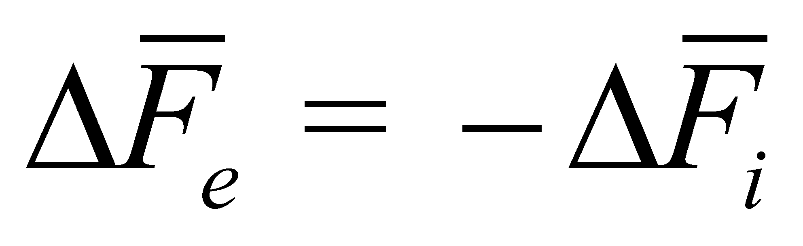
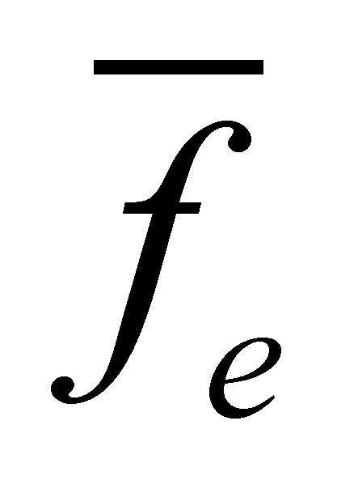
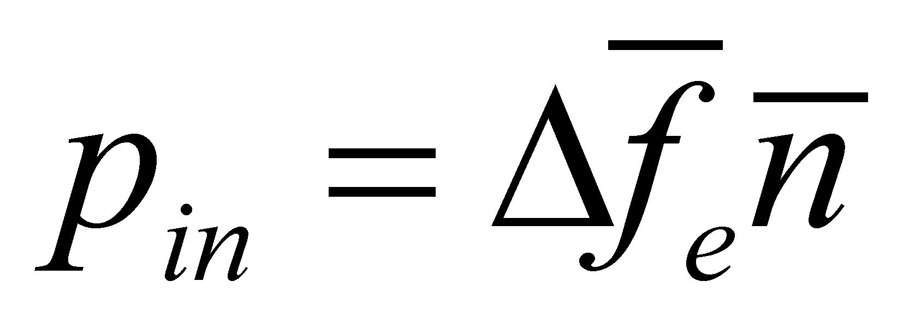

|
|
|
In the previous chapter, we have seen what is the action of an energy flux quantum, that is a process with two distinct, disjoint but temporally contiguous phases: incidence and reflection. Let us further analyze the action process of some energy fluxes made-up from a large number of quanta, both as an effective section and by considering the conveyed energy stock. We have seen that the flux is a spatial-temporal distribution of a transfer process, therefore, all the quantic processes of the flux shall be also spatially-temporally distributed. This fact means that the quantic processes depicted in the above-mentioned section can be randomly superposed and added, thus giving the impression of the process continuity. Consequently, although the incidence and reflection processes are successive at the quantic level, at the overall distribution level which involves a very large number of elements, these two processes seem to be simultaneous, because there is no temporal coherency between the quantic support intervals. That is the case of the fluxes from L or G media which deploy L or G-type relations (which were presented in chapters 5 and 6) between their elements. In case of S-type media, in which there are steady relations between all the flux’s elements, the two processes - incidence and reflection - can be successive, just as in the quantic case (elastic collisions). After all these explanation, it is time to analyze the general process of the energetical action of an EF on a MS.
Let us presume that we are dealing with
a material body MSk which is in a rest state against an
external reference system RSe, the position vector of the
body against this reference being the invariant55
 .
The spatial state of MSk is in this case a S0
state, as long as the body remains motionless. A spatial state change
of this body means a variation of the spatial position
attribute - that is the vector
.
The spatial state of MSk is in this case a S0
state, as long as the body remains motionless. A spatial state change
of this body means a variation of the spatial position
attribute - that is the vector
 .
However, this kind of variation represents a motion
(translation motion, in this case), process which requires a certain
velocity, and the occurrence of a velocity started by the rest state
means a variation of the velocity rate reaching from zero to any
value, that is an acceleration.
.
However, this kind of variation represents a motion
(translation motion, in this case), process which requires a certain
velocity, and the occurrence of a velocity started by the rest state
means a variation of the velocity rate reaching from zero to any
value, that is an acceleration.
When the body was motionless, it had a null kinetic energy (against RSe), but as long as the body is moving, its energy is non-zero, therefore, for achieving a spatial state change, the body needs energy, which is provided only from the outside, from another body which owns a transmissible energy, namely from an open energy flux (EF). We have seen in the previous sections that the energy is an exclusively transmissible property, coming from a MS which has it (which is moving) and which property can be delivered, through an interaction, to another material body. First, let us make a review focused only on the body which receives energy, that is the driven body, represented only within a partly section in the figure 7.6.6.4.1, displaying an outer energy influx 56 on the real bounding surface included between the two abstract surfaces (external) and (internal).
Fig. 7.6.6.4.1
At the moment of impact between the
energy influx and RBS of MSk the composition process
between the outer influx
and the inner influx
 (reaction
flux, inertial, relativ, see also annex X.7) of the driven body shall
be produced, and during this time, the equilibrium surface
of the interactive fluxes being motionless if the interactive fluxes
are equal (equilibrium state). As a result of this process, part of
the outer flux shall be reflected,
and a variation of the outer flux
(reaction of the inner flux) will therefore be generated, whereas in
the inside, the reaction flux, that is a component of the
internally-stored flux, shall be composed with the outer traflux,
resulting a variation of the inner flux
(action of the outer flux). For simplicity, we momentarily let aside
the tangential components of fluxes, in this case
and
are collinear with the normal line placed at the equilibrium surface.
Under equilibrium terms (motionless
against SRe) we shall have:
(reaction
flux, inertial, relativ, see also annex X.7) of the driven body shall
be produced, and during this time, the equilibrium surface
of the interactive fluxes being motionless if the interactive fluxes
are equal (equilibrium state). As a result of this process, part of
the outer flux shall be reflected,
and a variation of the outer flux
(reaction of the inner flux) will therefore be generated, whereas in
the inside, the reaction flux, that is a component of the
internally-stored flux, shall be composed with the outer traflux,
resulting a variation of the inner flux
(action of the outer flux). For simplicity, we momentarily let aside
the tangential components of fluxes, in this case
and
are collinear with the normal line placed at the equilibrium surface.
Under equilibrium terms (motionless
against SRe) we shall have:
 (7.6.6.4.1)
namely, the variation of the outer flux (reaction) must be equal and must have an opposite sign as compared to the variation of the inner flux (action). If we shall analyze strictly vectorial the outer energy fluxes from the figure 7.6.6.4.1, it may be noticed that:
(7.6.6.4.2)
but the balance of the outer influx states that it is divided in two parts at the impact with RBS, and these are: the outer flux conveyed through RBS (outer traflux) and the outer reflux:
(7.6.6.4.3)
The outer traflux shall determine the state change of the driven system by means of composition with inner pre-existed flux. According to the relations 7.6.6.4.1 and 7.6.6.4.3, the result is:
 (7.6.6.4.4)
(7.6.6.4.4)
and accordingly:
(7.6.6.4.5)
The relations 7.6.6.4.4 and 7.6.6.4.5 provide us a very significant information, that is:
The variation of an incident EF on RBS of a MS is equal and of opposite sense with the fraction from EF which is transmitted through RBS.
The above-mentioned statement is valid both for the outer and inner EF, stored inside RBS. This variation of an EF at the contact with a RBS has a well-known denomination according to the objectual philosophy.
Definition 7.6.6.4.1: The overall variation of an energy flux at the incidence with RBS of a MS is named force.
Comment 7.6.6.4.1: Definition 7.6.6.4.1 settles that the force is an EF (variation of a flux is also a flux), but a special type of flux which solely occur at the contact of an EF with RBS of a MS. Otherwise speaking, if there is no RBS with a subunitary permeability and an energy flux stored inside it, and they both generate a reflected flux, no force can exist either. Based on the relations 7.6.6.4.4 and 7.6.6.4.5, it may be also noticed that the force also represents an EF conveyed through a RBS, but only under the presence of the other components - the incident and reflected flux. The reader will probably notice that the definition 7.6.6.4.1 is a definition which does not depend on the Newton’s (inertial) force definition (F=ma) and unlike this latter definition, the definition 7.6.6.4.1 is valid in any circumstances, even for the static (passive) forces, for which the Newton’s definition cannot be applied.
Both variations of EF given by the relations 7.6.6.4.4 and 7.6.6.4.5, considered as equal and opposite, represent the two equal and opposite forces, which are known in physics as the action and reaction force. These variations are due to the composition on RBS (more exactly, into its transition volume) of the external EF with the internal EF, that is a composition of the homologue elements, which are normal and tangent respectively, up to the moment when the resources of one of the fluxes would be depleted.
Comment 7.6.6.4.2: If an EF covers an abstract surface (computing, imaginary one), since it has a total transmittance, a reflected flux cannot exist and consequently, no force is able to occur on such a surface.
When EF was decomposed on RBS, we noticed that there are two components of the incident, transmitted and reflected fluxes, and these are the normal and tangential components. Therefore, the variations of these fluxes shall also have two components, fact which generates the occurrence of two force types at the impact of an EF with RBS: normal force and tangential force. We have also seen that at the incidence of an external EF, all its components determine the generation of similar components inside MS, the reaction fluxes, whose normal and tangential components will produce the reaction forces, with the two components: normal and tangential. According to the composition rules of EF, the existence of the interactive force pairs is provided as long as the interactive fluxes have enough resources.
Comment 7.6.6.4.3: The existence of the normal and tangential components of the forces into the MS model established by the objectual philosophy allows a clear and coherent understanding on the occurrence of the friction forces. According to the physics textbooks, a friction force is generated when two real objects in contact each other, try to move one against another. The friction force withstands to the translation motion of the objects, being proportional (approximative) to the pressure force of the objects on the contact areas, to the roughness of the two surfaces, to their adherence degree, and dependent on the material type of the two objects. Based on the objectual approach, the friction force is nothing but the tangential component of the reaction force within the medium of the real surface, that is a force proportional to the size of the cross-section area of RBS (roughness of the two real surfaces which interact), to the contact pressure (level of the baric potential energy from the transition volume of the two RBS) and it depends on the physical-chemical properties of the two media which are placed inside the transition volume.
So far, we have discussed about the interactive forces in case of their equality, manifested during the equilibrium state, when the equilibrium surface was remaining motionless against an outer reference. Let us find out what is happening in case of a disequilibrium, when the equilibrium surface is displaced.
The figure 7.6.6.4.2 shows an inner section made through a cylindrical enclosure whose volume is separated in two other equally-presumed volumes Va and Vb by a mobile piston. A similar gas is found in the two volumes, at the same temperature and pressure, which means that the equal and opposite forces Fa and Fb will be exerted on the piston. In such conditions, the piston will stay still, the equilibrium surface between the two forces being included in its volume. Under this state, within the two G-type media found in the volumes Va and Vb, the same baric potential energy stockpiles pVa=pVb (p is the pressure from the two enclosures) are stored as well as the same stockpiles of potential thermal energy nRT (where n is the same number of gas moles from the volumes Va and Vb, R is the gas constant value and T - absolute temperature.
Fig. 7.6.6.4.2
Comment 7.6.6.4.4: Attention! According to the classic physics, in such equilibrium circumstances, there is no energy transfer between the two media from the volumes Va and Vb; on the contrary, according to the objectual philosophy, there is a permanent energy transfer (flux) between the two media, but with equal and opposite intensity, fluxes which are represented by the two forces Fa and Fb. How could not exist EF when the gas molecules are collided with the piston surface and they are reflected afterwards? The variation of their impulse (the one which gives the gas pressure) will always produce a shock wave inside the piston, wave which will transfer the energy from the gas towards the piston, and the piston reaction (the one which generates the reflection of the gas molecules) means an energy transfer from the piston to the gas.
Now,
let us assume that we insert a
 baric energy (a gas flux, see figure 7.6.6.4.2.b) into the volume Va,
and as a result of this energy flux, a
increase of the gas pressure will occur into the volume Va.
Due to this flux, the pressure increase from Va
will lead to the growth of force Fa, which now it
is major than Fb, consequently, the piston (and at
the same time, the equilibrium surface) shall move by compressing the
gas from Vb until the reaction
force Fb will be equal again with the new value of
Fa. The piston displacement with
means a
compression of the gas from Vb, therefore,
an input of baric energy for the gas within this enclosure. Thus, we
are dealing with an energy transfer (energy flux) from the medium
from Va to the medium from Vb,
the force Fa being an active force this
time, and the quantity
of baric energy transferred into this process is the mechanical
work performed by the force Fa.
baric energy (a gas flux, see figure 7.6.6.4.2.b) into the volume Va,
and as a result of this energy flux, a
increase of the gas pressure will occur into the volume Va.
Due to this flux, the pressure increase from Va
will lead to the growth of force Fa, which now it
is major than Fb, consequently, the piston (and at
the same time, the equilibrium surface) shall move by compressing the
gas from Vb until the reaction
force Fb will be equal again with the new value of
Fa. The piston displacement with
means a
compression of the gas from Vb, therefore,
an input of baric energy for the gas within this enclosure. Thus, we
are dealing with an energy transfer (energy flux) from the medium
from Va to the medium from Vb,
the force Fa being an active force this
time, and the quantity
of baric energy transferred into this process is the mechanical
work performed by the force Fa.
Definition 7.6.6.4.2: The energy amount transferred from the agent EF towards the reaction EF under the conditions of the displacement of the equilibrium surface placed between them is named mechanical work.
Definition 7.6.6.4.3: The force which generates mechanical work is named active force.
Definition 7.6.6.4.4: The force which does not generate mechanical work is named passive force.
Obviously, the mechanical work performed by the force Fa is a loss for the energy stockpile of the agent object (the medium from Va) and an energy gain for the driven object (the medium from Vb).
Comment 7.6.6.4.5: Due to simplicity reasons, we have let aside both the thermal processes and the piston’s mass, for not being compelled to analyze also the conversion of the baric potential energy into the piston’s kinetic energy, during its motion, or the conversion of baric energy into thermal energy and vice versa. The definitions 7.6.6.4.3 and 7.6.6.4.4 allow us to identify as passive forces, both the forces which withstand to some active forces (reaction forces) and also the forces which are under equilibrium (the case from the figure 7.6.6.4.2.a).
The intensity of an EF transmitted to a MS, that is the temporal density of the energy transport process, intensity which is usually called power, is given by the relation:
(7.6.6.4.6)
where
 is
the energy amount passed through RBS of MS in the interval
is
the energy amount passed through RBS of MS in the interval
 .
But the same intensity of an EF is also given by the following
relation:
.
But the same intensity of an EF is also given by the following
relation:
(7.6.6.4.7)
where
is FDV of EF, is
an abstract reference surface,
is its oriented-area element (with
 as
its normal line),
is the volume density of the energy from the agent EF, and
is
the energy’s transfer velocity through
as
its normal line),
is the volume density of the energy from the agent EF, and
is
the energy’s transfer velocity through
 .
.
Comment 7.6.6.4.6: The relation 7.6.6.4.7 is equivalent to the relation 5.2.1.4 or with X.8.2; all these relations which express the intensity of a flux through a reference surface are valid only for the abstract surfaces (theoretical, computing ones) and cannot be applied to the real bounding surfaces. The equilibrium surfaces intervene here and the reader is able to finally understand what is actually their role, that is in fact the role of abstract reference surfaces which allow the application of computing relations of the interactive fluxes’ intensity values, surfaces which are always placed inside the transition volume of the real bounding surfaces.
Since the interactive fluxes which cross through RBS have the two components - normal and tangential - it results that their equilibrium surface shall also have two components - normal and tangential. In case of EF through RBS, the relation 7.6.6.4.7 may be written as:
(7.6.6.4.8)
where
and
 are the normal and tangential components (projections) of the
equilibrium surface, and
and
are their oriented-area elements.
are the normal and tangential components (projections) of the
equilibrium surface, and
and
are their oriented-area elements.
In relation 7.6.6.4.8,  is FDV of EF which passes through the reference surface, namely of one of the fluxes transmitted through RBS, or respectively, from the relations 7.6.6.4.4 and 7.6.6.4.5. But, according to these relations: and , namely, the flux density vectors of the energy fluxes conducted through RBS are in their turn FDV variations of the outer or inner fluxes. By using these specifications, we may write:
(7.6.6.4.9)
and:
(7.6.6.4.10)
where the relation 7.6.6.4.9 shows the power conveyed by the outer force through the equilibrium surface, and the relation 7.6.6.4.10 shows the power conveyed by the inner force (reaction force) through the same surface, under equilibrium conditions, when the equilibrium surface is motionless.
It may be observed that all these relations which express the intensity of some EF consist of two attributes: a flux density (FDV or FQV) and an oriented surface element. Their dot product means the intensity of an elementary EF, namely of an elementary force. Otherwise speaking, the intensity of an elementary force (an elementary power) is given by the product between the area of a surface element and the density by surface of an EF which runs through it. This superficial density of an EF has a well-known name in the objectual philosophy.
Definition 7.6.6.4.5: The superficial density of the variation of an energy flux, deployed on RBS of a MS, is named pressure.
Comment 7.6.6.4.7: According to the definition 7.6.6.4.1, we have noticed that the variation of an EF deployed on RBS is a force, and based on the definition 7.6.6.4.5, the pressure seems to be a surface density of a force. According to the current scientific literature, there is the relation F=pS, where F, p and S are scalar quantities (F is the force modulus, p-pressure and S-surface on which the pressure is evenly distributed). Since according to the objectual philosophy, the pressure is the surface density of an EF, namely of a vector field, this fact clearly shows that the pressure is a flux density, therefore, a vector. The reason why the pressure is considered a scalar quantity according to the current physics, is the scalarization of the vector quantities (see annex X.9), that is a process which occur if the set of the successive vectors belonging to a Lagrange distribution or the set of simultaneous vectors of an Euler distribution do not have a common component.
As for the relations 7.6.6.4.9 and 7.6.6.4.10, we shall have:
(7.6.6.4.11)
where is the normal component of the outer pressure, and:
(7.6.6.4.12)
is the tangential component of the outer pressure. At equilibrium state, these shall correspond to the normal component of the inner pressure,  and to the tangential component of the inner pressure . Within the vector fields theory, there is the relation Gauss-Ostrogradski (see annex X.8), which is applicable for the fluxes deployed within closed surfaces:
 (7.6.6.4.13)
(7.6.6.4.13)
where ∑ is the closed abstract surface of a spatial domain with volume V, crossed by the flux of the vector . In case of the energy fluxes running through RBS, this relation is valid only for the pressure’s normal component and it becomes:
(7.6.6.4.14)
hence, it results in general, for any pressure’s normal component (inner or outer) pn, applied on a closed RBS of a MS with the volume V, the following relation:
(7.6.6.4.15)
Comment
7.6.6.4.8: In the left side of the relation 7.6.6.4.14 we have the
intensity of an EF through a closed surface
,
and in the right side there is an energy stockpile from the volume V,
more precisely, an inner stockpile variation from this volume
which is related to a specific input or output intensity through ∑,
in a
 interval. This is the meaning of the productiveness term
associated to the divergence, that is a word with a clear meaning for
denoting the energy fluxes. In case of a gas confined into the volume
V and of an even pressure distribution, the term from the
right side of the relation 7.6.6.4.14 becomes pV, the well-known
relation which defines the gas’ baric potential energy, which
cannot occur out of nothing but due to a generating process, that is
even its transport process, carried out from the outside through the
surface ∑.
interval. This is the meaning of the productiveness term
associated to the divergence, that is a word with a clear meaning for
denoting the energy fluxes. In case of a gas confined into the volume
V and of an even pressure distribution, the term from the
right side of the relation 7.6.6.4.14 becomes pV, the well-known
relation which defines the gas’ baric potential energy, which
cannot occur out of nothing but due to a generating process, that is
even its transport process, carried out from the outside through the
surface ∑.
A volume density of an amount distributed in a volume V, becomes, once with the initiation of the distribution motion, a surface density of that particular flux amount, through the reference surface ∑ (see the annex X.15). The definition 7.6.6.4.5 has stated that the pressure is a superficial density of an EF through the reference surface ∑, thus, we are able to draw a very important conclusion that, in case of the motionless media, the pressure is the volume density of the baric potential energy stored into the volume V, assertion which is also upheld by the right member of the relation 7.6.6.4.14. This energy is stored in an atomic or molecular medium placed into the volume V, under a stochastic flux form, whose elements (FQV) are the individual impulses owned by atoms or molecules, set in a chaotic motion.
Comment 7.6.6.4.9: The above underlined statement, which was checked at the level of the only media known so far (natural media: solid, liquid, gaseous) is also valid, according to the objectual philosophy, for the other media generations which were previously described in chapter 1 (the proximate fundamental media). In other words, if a medium consists of an amount of distributed potential energy, then, a pressure must clearly exist and where is a pressure and a MS with its RBS, a force will also be generated if the pressure spatial distribution is uneven.
55 The position vector has its application point (origin) in the outer T reference, and its peak in the inner T reference of MSk.
56 Due to reasons of simplicity and clarity of the graphical plotting, only the resultants of the interactive fluxes were displayed and the reader must understand that these fluxes have a spatial equipartition on their effective section.
Copyright © 2006-2011 Aurel Rusu. All rights reserved.